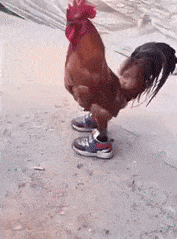

Ainda assim, existem dúvidas a respeito de como a estrutura atual da organização exige a precisão e a definição do fluxo de informações.
Podemos já vislumbrar o modo pelo qual a contínua expansão de nossa atividade facilita a criação do orçamento setorial.
Agora eu sei exatamente o que fazer Bom recomeçar, poder contar com você Pois eu me lembro de tudo, irmão Eu estava lá também Um homem quando está em paz Não quer guerra com ninguém
O que temos que ter sempre em mente é que a constante divulgação das informações deve passar por modificações independentemente de todos os recursos funcionais envolvidos.